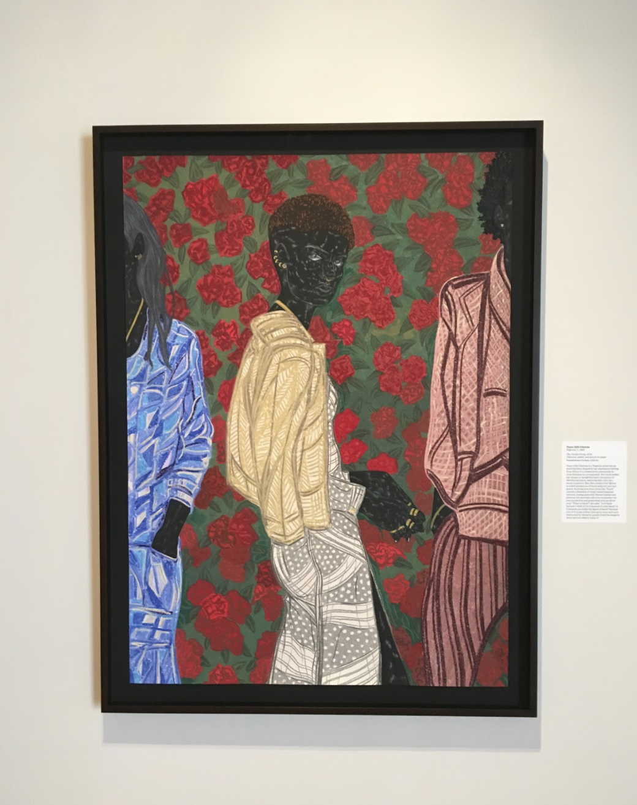
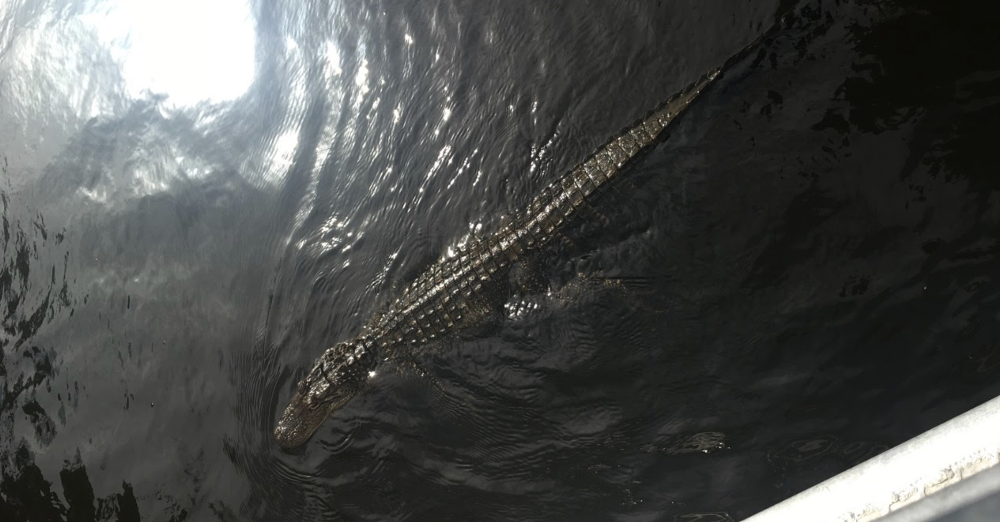
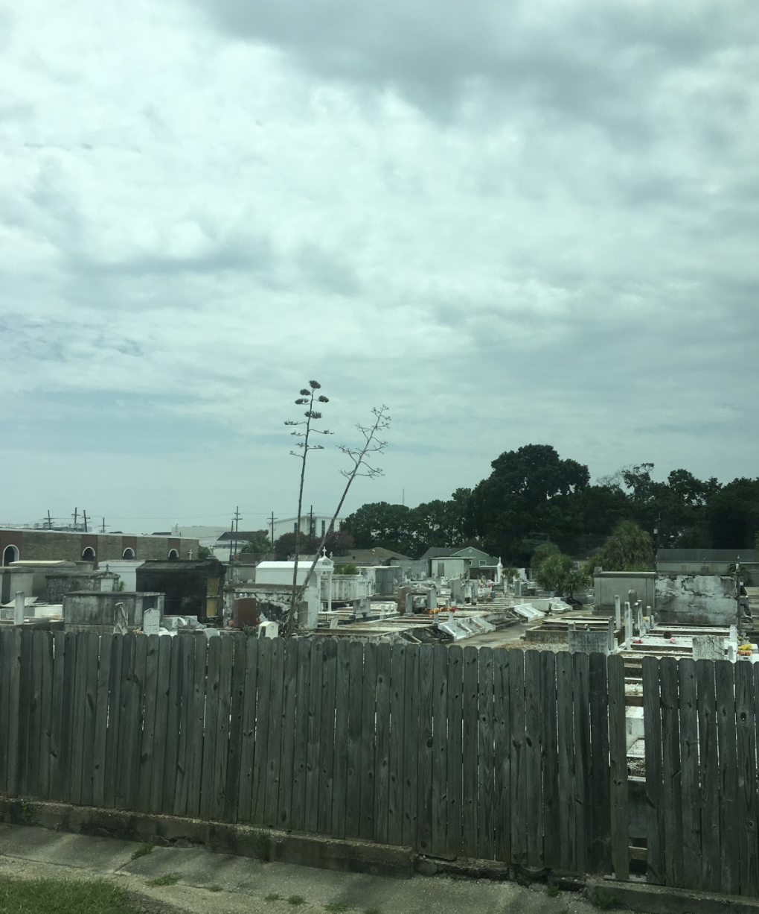
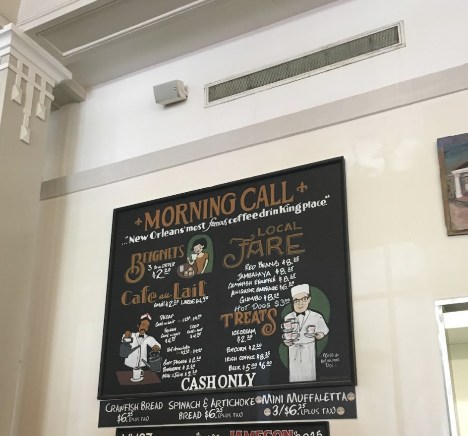

New Orleans is one the most vibrant cities in the United States. The city is filled with culture and history that has made it a well-known staple in the South. From the unique music, Creole, cuisine, and distint language New
Orleans has an identity of its own. One this page you will learn about the best places to go in New Orleans and why you need to make a stop at these special places.
New Orleans Museum of Art (NOMA)
New Orleans Museum of Art (NOMA), the city’s oldest fine arts institution, opened on December 16, 1911 with only nine works of art. Today, the museum hosts an impressive permanent collection of more than 40,000 objects. The collection, noted
for its extraordinary strengths in French and American art, photography, glass, and African and Japanese works, continues to expand and grow, making NOMA one of the top art museums in the South.

Cajun Pride Swamp Tours
For many years people have traveled extensively to Louisiana to locate a unique and exciting adventure exploring Louisiana's back country with its meandering bayous and swamp that you can only experience here - the historical Manchac Swamp.
You can have a large Louisiana cooking with crawfish, shrimp or crab boil, jambalaya dinner, barbecue or even boxed lunch.

Saint Louis Cemetery #2
Beginning in 1823, following the trends of other urban centers, New Orleans began moving its burial places out of the center of the city and into the outskirts of town in hopes of controlling outbreaks of contagious disease. Dating to the
early 19th Century, Saint Louis Cemetery #2 is located just a few blocks from Saint Louis Cemetery #1, the city’s oldest cemetery. Saint Louis Cemetery #2 is the hallowed final resting place of such diverse personalities as privateer Dominique
You, potential Catholic Saint Henriette DeLille, and a host of noteworthy New Orleans Jazz musicians.

Cafe Du Monde
The Original Cafe Du Monde Coffee Stand was established in 1862 in the New Orleans French Market. The locations are knowns for their world famous beignets. Beignets are square French -style doughnuts, lavishly covered with powdered sugar.

Deanie's Seafood
Known for its Southern hospitality, succulent seafood and hearty portions that satisfy the heartiest craving for Louisiana seafood and other regional favorites, Deanie’s Seafood restaurant in the French Quarter offers private dining that
reflects the unique atmosphere and authentic flavor of New Orleans.